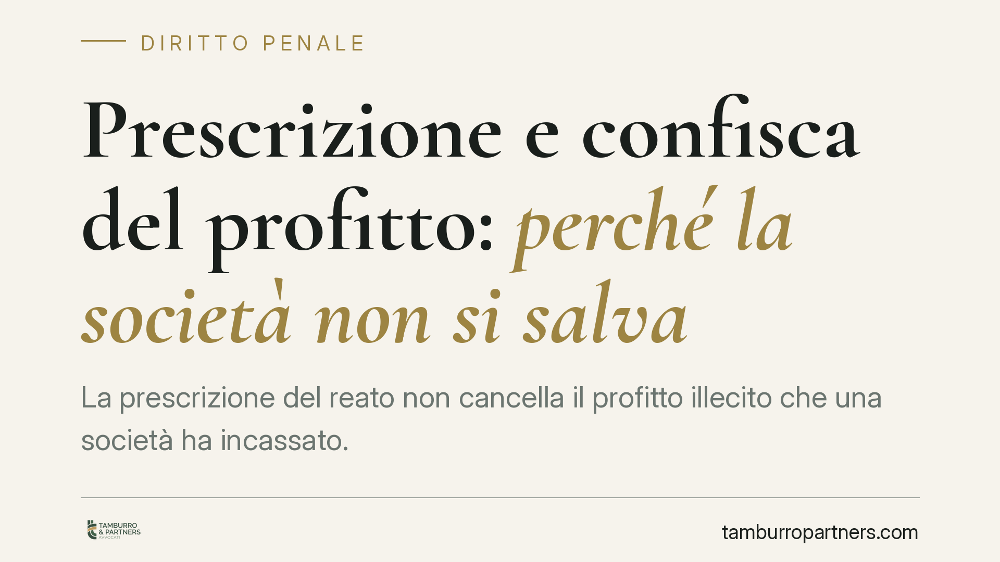

Prescrizione e confisca del profitto: perché la società non si salva
La prescrizione del reato non cancella il profitto illecito che una società ha incassato. La confisca diretta di quel profitto, avendo natura ripristinatoria e non punitiva, resiste all'estinzione del reato. Diverso il caso del concorrente persona fisica che non ha beneficiato: su di lui la misura non può ricadere. Una distinzione che ridisegna i confini del rischio patrimoniale per gli enti.

Il principio in sintesi
Quando un reato si prescrive, l'imputato persona fisica evita la condanna. Ma il profitto dell'illecito, se è finito nelle casse di una società, può restare aggredibile dallo Stato. È questo il nodo che la giurisprudenza di legittimità continua a consolidare: la confisca diretta del profitto del reato non è una pena, ma uno strumento di riequilibrio patrimoniale. Per questo sopravvive alla prescrizione.
Il messaggio operativo è netto: la prescrizione non è uno scudo patrimoniale. Estingue la responsabilità penale della persona, non legittima l'ente a trattenere ciò che ha guadagnato illecitamente.
> *Nota redazionale: il numero e l'anno della pronuncia richiamata dalla fonte (indicata come Cass. pen., Sez. VI, n. 39655/2026) sono da verificare. Il principio esposto è comunque radicato nella giurisprudenza consolidata e prescinde dalla singola sentenza.*
Inquadramento normativo
Occorre distinguere due figure spesso confuse.
La confisca diretta colpisce il profitto del reato nella sua concreta materialità o nel suo equivalente monetario immediatamente riconducibile all'illecito. Le Sezioni Unite, con la sentenza Lucci n. 31617/2015, hanno chiarito che questa misura ha natura ripristinatoria: non punisce il reo, ripristina la situazione economica precedente al reato sottraendo un arricchimento ingiusto. Proprio perché non è una sanzione penale, non richiede una condanna formale e può essere disposta anche in caso di proscioglimento per prescrizione, purché il fatto storico risulti accertato.
La confisca per equivalente opera invece su beni di valore corrispondente al profitto, quando quest'ultimo non è più rintracciabile. Qui il meccanismo cambia: la giurisprudenza le riconosce natura afflittiva, assimilabile a una pena. Di conseguenza, richiede una sentenza di condanna e non può essere applicata se il reato si prescrive.
Sul versante degli enti, l'art. 19 del D.lgs. 231/2001 prevede la confisca del prezzo o del profitto del reato commesso nell'interesse o a vantaggio della società. Questa misura si rivolge all'ente che ha incassato il profitto, non all'apicale o al dipendente che ha materialmente agito. Il richiamo all'art. 322-ter c.p. è pertinente solo quando il reato presupposto appartiene ai delitti contro la Pubblica Amministrazione: è una norma settoriale, non una clausola generale. Per altri reati presupposto valgono le discipline di confisca specifiche o la disciplina generale dell'art. 240 c.p.
Implicazioni pratiche
Il quadro produce un effetto asimmetrico, da leggere con attenzione.
La società che ha beneficiato del profitto resta esposta alla confisca diretta anche se il procedimento penale a carico delle persone fisiche si chiude per prescrizione. Il tempo che estingue il reato non estingue l'arricchimento dell'ente.
Al contrario, il concorrente persona fisica che non ha tratto alcun beneficio patrimoniale dall'illecito non può subire la confisca del profitto: non avendo incassato nulla, non c'è nulla da sottrargli in via diretta. Una confisca per equivalente a suo carico, poi, richiederebbe comunque una condanna, preclusa dalla prescrizione.
La posizione dell'imprenditore e quella dell'uomo di fiducia vanno dunque valutate separatamente da quella dell'ente. Sovrapporle è l'errore più frequente e più costoso.
Cosa fare in concreto
- Mappate i flussi. Ricostruite con precisione dove è transitato il profitto contestato: distinguere ciò che è confluito nel patrimonio dell'ente da ciò che è rimasto alle persone fisiche è decisivo per individuare chi è realmente esposto.
- Separate le posizioni soggettive. Trattate la difesa dell'ente e quella del singolo concorrente come questioni distinte, perché i presupposti della confisca cambiano radicalmente.
- Verificate la tracciabilità. È opportuno rivedere la documentazione contabile e i movimenti infragruppo, così da poter dimostrare con chiarezza chi ha beneficiato e chi no.
- Non confidate nella prescrizione come tutela patrimoniale. L'estinzione del reato non protegge l'ente dall'ablazione del profitto: va pianificata una strategia che tenga conto della sopravvivenza della confisca diretta.
- Valutate il reato presupposto. Identificate con esattezza la fattispecie contestata per capire quale disciplina di confisca si applica, evitando di dare per scontato un riferimento normativo errato.
In sintesi
La natura ripristinatoria della confisca diretta è la chiave di tutto: proprio perché non punisce ma riequilibra, resiste alla prescrizione. L'ente che ha guadagnato dall'illecito non trova riparo nel decorso del tempo. Il concorrente che non ha guadagnato nulla, invece, non può essere colpito da una misura pensata per sottrarre un profitto che non gli appartiene.
---
*Contributo informativo a cura di Tamburro & Partners - Avv. Giuseppe Tamburro. Non costituisce parere legale.*
Ogni condominio ha una storia a sé.
Se gestisci un'amministrazione e vuoi un confronto su una specifica questione condominiale, scrivi allo studio. Ti rispondiamo entro un giorno lavorativo.